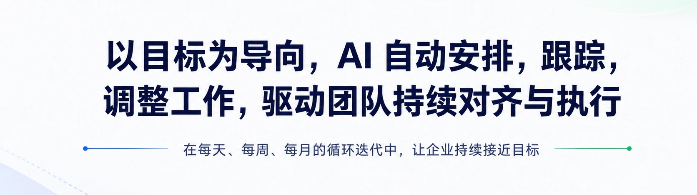
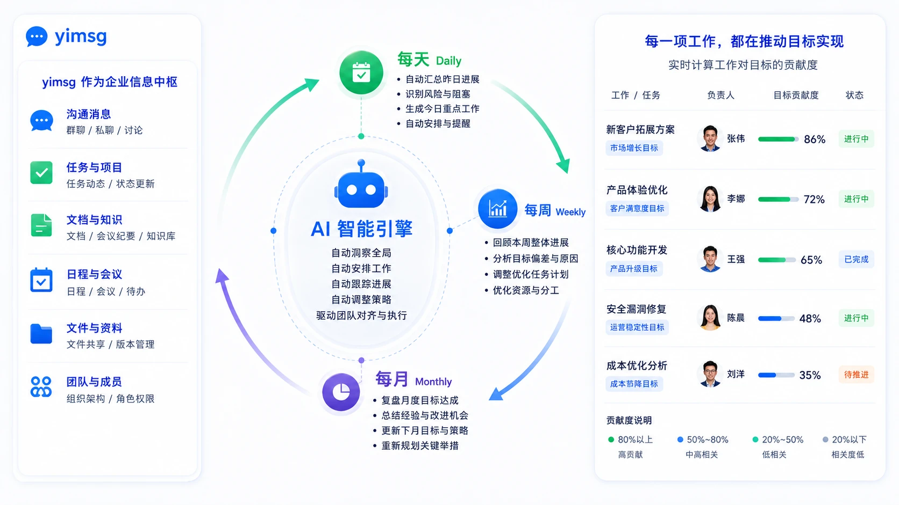
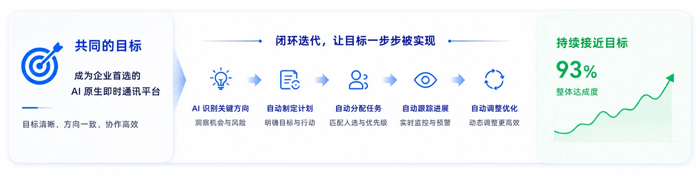
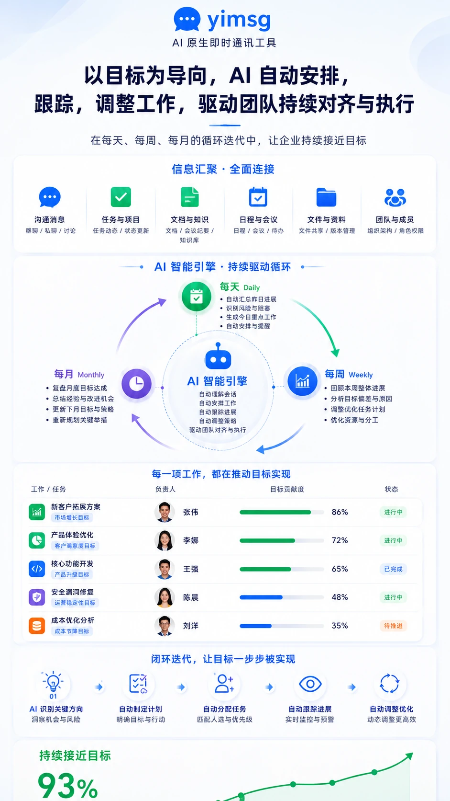

数据自主可控
所有数据都掌握在自己手上，集中在办公室的一台机器里， 不经过任何第三方云，完全由你掌控。需要时可一键删除，彻底清空。
一台巴掌大的迷你主机，就是你的整套聊天服务器。 接入内网即可使用，聊天数据始终留在你自己手里。
把数据主权、极简部署与极致性能，全部装进一台属于你自己的机器。
所有数据都掌握在自己手上，集中在办公室的一台机器里， 不经过任何第三方云，完全由你掌控。需要时可一键删除，彻底清空。
一台机器、几分钟即可上线，无需复杂运维。 无论是否拥有域名或公网 IP，都有对应接入方式，最坏网络下也能稳定连通。
2 核 4G 单机即可支撑百人聊天，部署包不到 32MB，客户端内存可控， 天然适用于资源受限的嵌入式场景。
同一套聊天能力，既能整套开箱即用，也能按需嵌入到你自己的产品里，还能适配手机与桌面两种终端。
把 yimsg UIKit 一行代码嵌入官网或后台系统， 访客无需注册加好友，随时都能发起临时会话咨询客服。
体验客服组件 →一个人也能同屏坐镇 6 个客服账号：小团队多店铺、多渠道客服共用同一坐席时， 6 路客户会话逐格直接回复，无需来回切换登录。
体验六宫格工作台 →也可以作为一套独立完整的网页 IM 应用直接使用， 登录即可收发消息、管理联系人与群组，无需额外开发。
体验完整企业 IM →好友与复杂组织架构统一收进通讯录页，四层部门、约 76 人的示例组织一目了然； 完整底部导航可在聊天 / 通讯录 / 设置之间自由切换。
体验组织通讯录 →客户端支持本地持久化缓存，刷新页面或断网重连都不会丢失会话—— 该 demo 已自动登录，无需自己注册。
体验本地持久化 →同一套 UIKit 自动适配手机与桌面两种布局：手机端底部导航 + 单栏切换， 桌面端侧栏导航 + 多栏并列，无需为不同设备单独开发。
体验手机 / PC 双端 →


